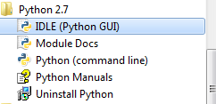
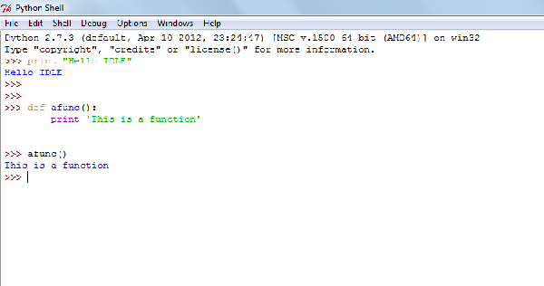
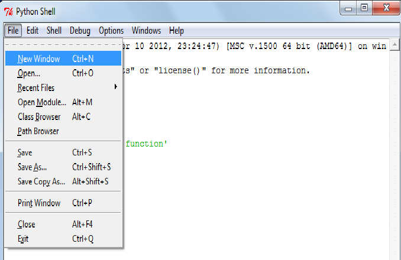
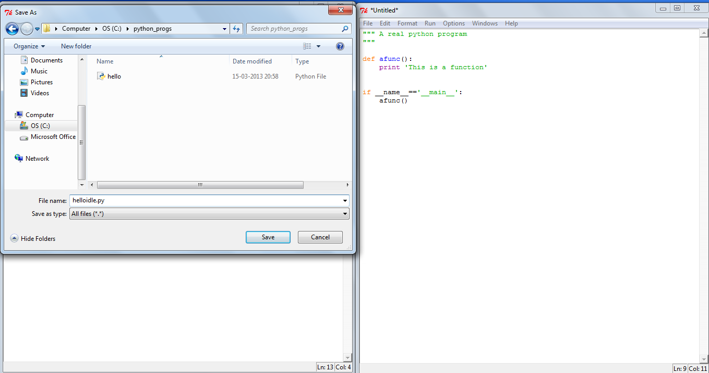
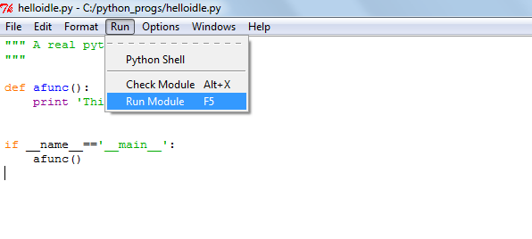
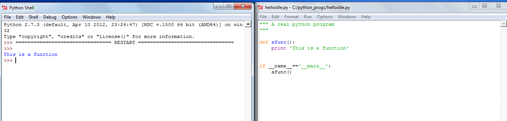
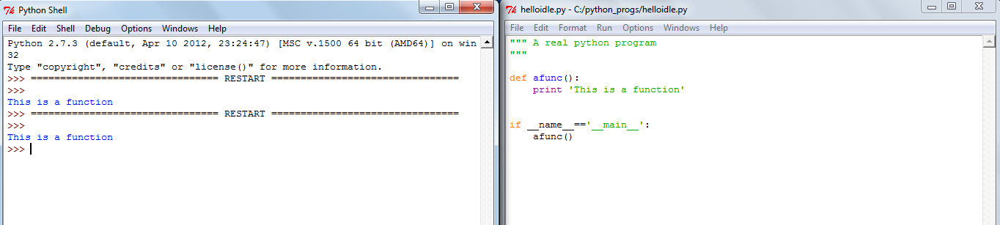
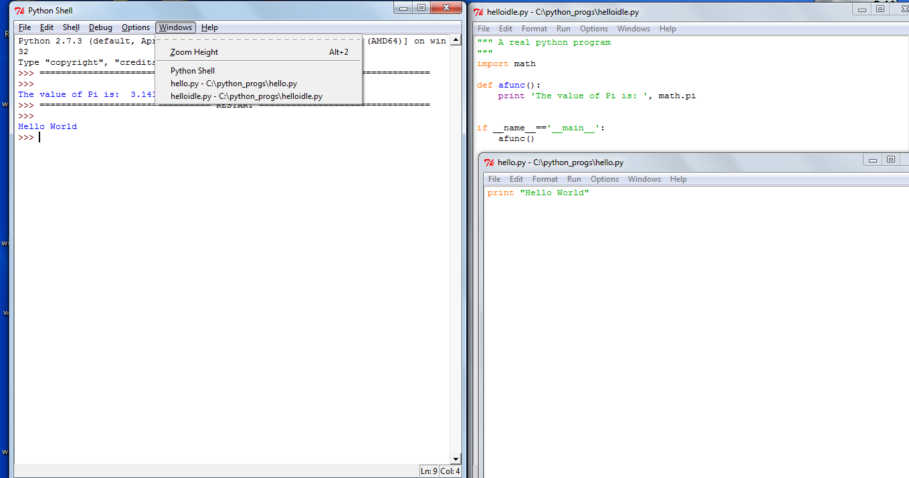
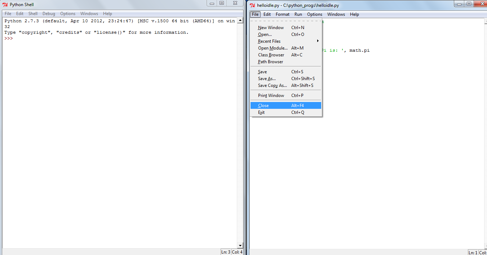
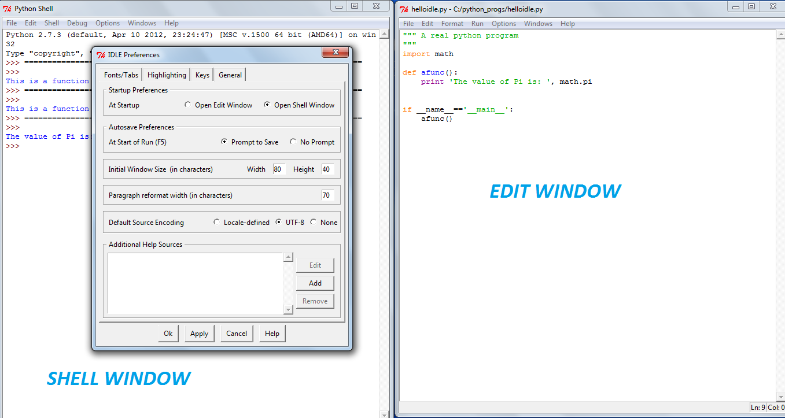

In this guide, we take a look at the basic features of IDLE (Python’s Integrated DeveLopment Environment) which are suitable for a new Python programmer. The scope of this document is intentionally limited to be able to use the interactive shell, write programs using the editor and running it.
On Windows (Microsoft Windows 7), if you have installed Python using the installer, IDLE should already be installed. Go to your start menu and look for IDLE (Python GUI) under the Python2.7 or Python3.3 menu.
On Linux, you will most likely have to install it separately using the package manager. On Ubuntu (Ubuntu 12.04) , you can use the software center to search for IDLE and install it (either for Python 2 or Python 3). You can also install IDLE using the command line - the package name is most likely idle2 and idle3 on Ubuntu and python-tools and python3-tools on Fedora (Fedora 18).
Once the installation is completed, start IDLE (on Windows, click the IDLE program from the menu; on Linux, type idle (or, idle3) on the terminal). You should see the Python interactive shell where you can enter Python statements:
You can go back to previous commands using the UP arrow key and press the ENTER key to bring the command to the current prompt. You can then modify it or execute it without any changes.
As you can see, the interactive shell automatically performs syntax highlighting on your commands.
To open the editor, click on File -> New Window menu item.
Type in your program, and save it by using the File -> Save As menu item.
You can type your program here, and then click on Run -> Run Module menu item to execute it.
You will see that the result of execution of your program appears in the previous shell window from where you started the editor.
There is a message RESTART in the shell window whenever you run your module. This basically tells us that your module always starts from a new environment when it starts execution.
You can open more than one editor window open at the same time.
You can close the editor window only (File -> Close) or exit IDLE completely (File -> Exit).
An editor feature which is really handy when you are writing your first programs in Python is the automatic indentation support. IDLE automatically detects the correct indentation and starts a new line accordingly.
There are other features such as code completion which we will not discuss at this point of time.
There are various aspects of IDLE you can configure by opening the Configure IDLE window (Options -> Configure IDLE).
For example, you can choose to start IDLE with the interactive shell window or the editor window by changing the preferences in the General tab.
You can open the Python documentation by clicking on the Help -> Python Docs menu item. If you have installed the Python docs during installation, it should open the local copy for you. If it doesn’t find a local copy, it will open the browser pointing you to the Python documentation web page.
On Windows, if you did not deselect it manually, the documentation should already be installed. On Linux, you have to install a separate package. For Python 2, the package names are python-doc on Ubuntu and python-docs on Fedora. For Python 3, the package name is python3-doc on Ubuntu. As of this writing, python3-docs on Fedora, doesn’t exist.
In this article, we have seen the most basic features that IDLE has. IDLE is friendlier to work with than the default interactive shell and its editor also makes it possible to write large programs without the need to use/install another program.
{kind=link}
{kind=link}
{kind=link}
{kind=link}
{kind=link}
{kind=link}
{kind=link}
{kind=link}
{kind=link}
{kind=link}